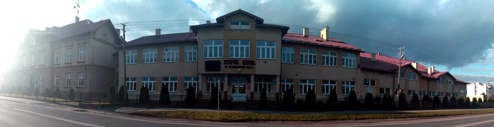
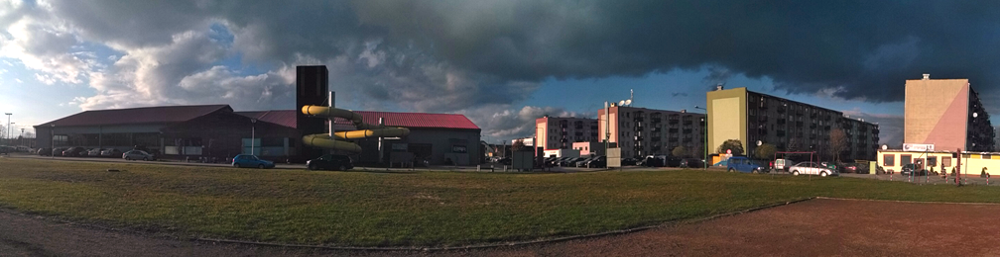

-

Zespół Szkół w Sokołowie Małopolskim
-

Kryta pływalnia Sokołów Młp.
-
Zobacz Sokołów !
O mnie:
Cześć ! Nazwywam się Tomasz Waberski, jestem studentem III roku "Informatyki i Ekonometrii". Od młodych lat interesuje się informatyką, grafiką komputerową, video montażem oraz technologiami sieciowymi. Lubię wyjazdy w miejsca znane i nieznane. Zapraszam do odwiedzenia mojej witryny.
Napisz do mnie
Kim jestem ?
Z zawodu jestem technikiem informatykiem. Aktualnie studiuję „Informatykę z Ekonometrią” na Uniwersytecie Rzeszowskim. Jestem optymistą i realistą. Pozytywnie podchodzę do otaczającego mnie świata.
Jeśli chcielibyście się ze mną skontaktować skorzystajcie z formularza obok lub napiszcie bezpośrednio na adres: wabtomek@wp.pl